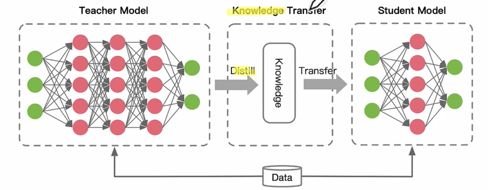
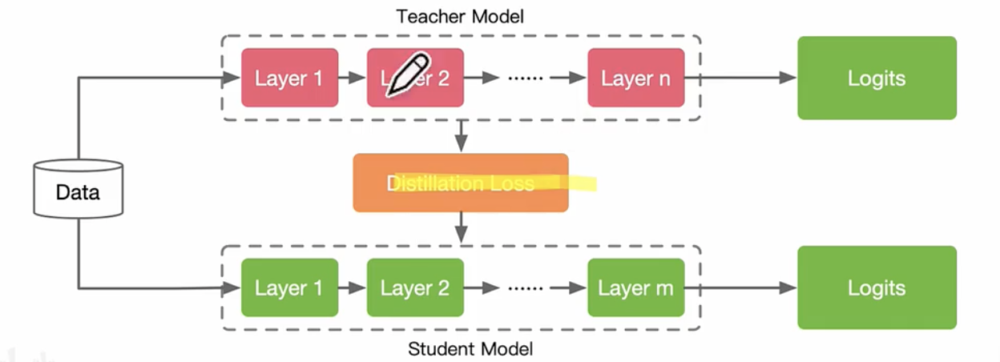
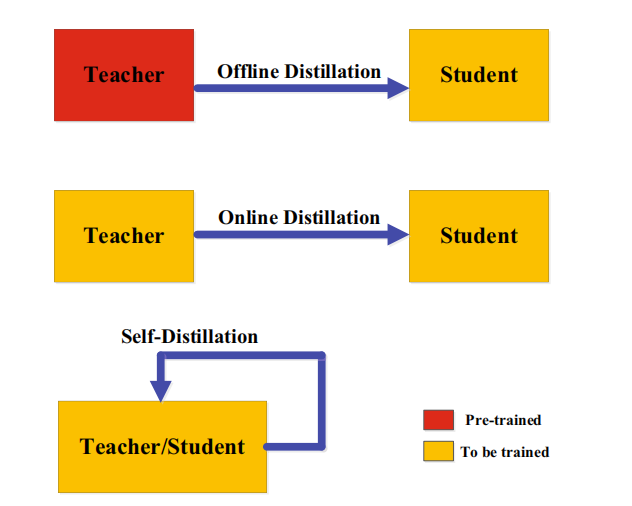

KD

文章目录
知识蒸馏
背景
最初由Hinton提出，与Label smoothing动机类似，但是KD 是通过教师网络得到soft labeling。KD可以视为将教师网络学到的知识压缩到学生网络中。
另外一些工作将KD视为数剧增强的一种方法。
知识蒸馏的组成
蒸馏有知识，蒸馏算法，师生架构三部分组成。
- 知识：蒸馏的是什么知识，知识的形式是什么？
- 蒸馏算法：如何蒸馏
- 师生架构：

蒸馏的知识形式
response-based
知识形式：教师模型输出层的特征，主要思想让学生模型直接学习教师模型的预测结果。
通过计算损失函数优化，使得学生模型学习老师模型中的知识

feature-based
知识形式：教师模型中间层的权重。
基于特征的知识迁移为学生模型的学习提供了良好的信息，但是如何从教师模型中选择提示层，从学生模型中选择引导层，有待进一步研究。

relation-based
知识形式：不同层或数据样本的关系。
具体蒸馏方法
根据教师模型是否与学生模型同时更新，知识蒸馏的学习方案可分为离线（offline）蒸馏、在线（online）蒸馏、自蒸馏（self-distillation）。

离线蒸馏
知识渊博的老师传授知识给学生
整个训练过程包括两个阶段：1）大型教师模型蒸馏前在训练样本训练；2）教师模型以logits或中间特征的形式提取知识，将其在蒸馏过程中指导学生模型的训练。
离线方法主要关注知识迁移的不同部分，包括知识设计、特征匹配或分布匹配的loss函数。离线方法的优点是简单、易于实现。
此外，教师与学生之间的能力差距始终存在，而且学生往往对教师有极大依赖。
在线蒸馏
在线蒸馏是指教师和学生一起学习；
在线蒸馏时，教师模型和学生模型同步更新，而整个知识蒸馏框架都是端到端可训练的。
现有的在线方法（如相互学习）通常无法解决在线环境中的高容量教师，这使进一步探索在线环境中教师和学生模式之间的关系成为一个有趣的话题。
自蒸馏
类似于自学习；自我蒸馏是指学生自己学习知识。
在自蒸馏中，教师和学生模型使用相同的网络。
文章作者 杨浩伟
上次更新 2023-02-13